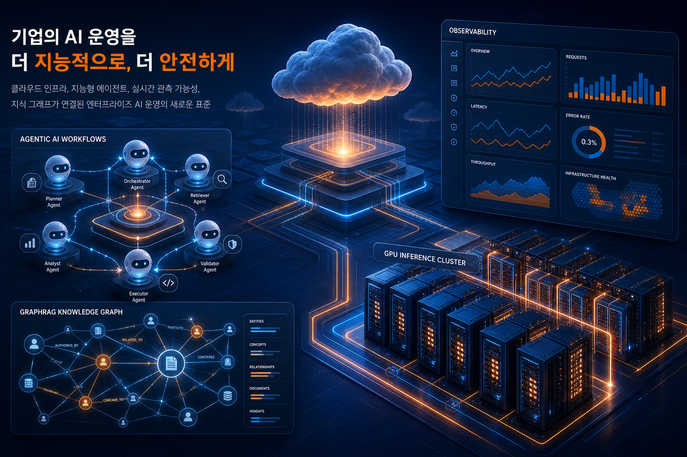
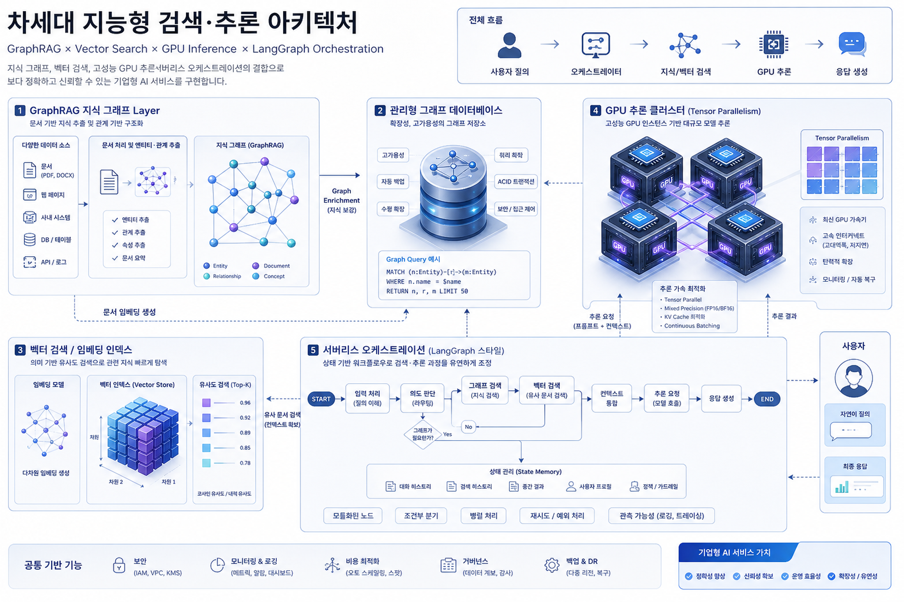
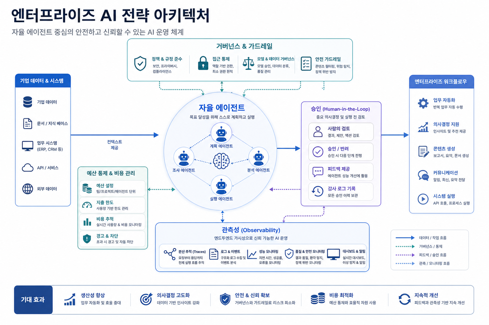

Part 3: Kiro로 RDS/Aurora 장애 분석 자동화하기 — 매일 자동으로 보고서 받기
Kiro CLI의 non-interactive 실행을 EC2와 cron, S3, SES/Slack 알림과 연결해 RDS/Aurora 일일 점검 보고서를 자동 생성·배포하는 KIDA 운영 파이프라인을 제시한다.
원문 보기오늘의 AWS 신규 글 12건은 하나의 신호로 수렴합니다. AI 에이전트는 더 이상 데모가 아니라 결제, 관찰성, 장애분석, 지식그래프, GPU 추론, 문서 자동화까지 기업 운영체계 안으로 들어오고 있습니다.

Kiro 기반 RDS/Aurora 장애 분석, AgentWatch, LangGraph/Strands/AgentCore 글이 반복해서 등장했습니다. 에이전트는 업무 보조를 넘어 운영 루프 안에서 관찰·판단·보고를 수행합니다.
GraphRAG, Amazon Quick observability, CloudWatch/CloudTrail 기반 데이터레이크는 AI 플랫폼 성공을 측정 가능한 운영 지표로 바꾸는 흐름을 보여줍니다.
G5/G6 Tensor Parallelism과 서버리스 오케스트레이션은 고가 GPU와 전용 서버만으로는 확장하기 어려운 enterprise AI 비용 구조를 다층화합니다.
이번 수집분은 AWS가 AI 애플리케이션을 “모델 API 호출”이 아니라 runtime, memory, observability, payments, orchestration, data lake, document output까지 포함한 end-to-end 플랫폼으로 포지셔닝하고 있음을 보여줍니다.

CloudWatch 알람 반응형 운영에서 AgentWatch/Kiro형 상시 관찰·요약·보고 체계로 전환할 수 있습니다. 단, 자동 조치보다 승인 경계와 감사 로그를 먼저 설계해야 합니다.
GraphRAG와 Quick observability는 AI 서비스가 정확히 무엇을 근거로 답하고, 누가 쓰며, 만족도와 비용이 어떤지 측정하는 운영 계층입니다.
G5/G6 기반 Tensor Parallelism은 한국 기업이 GPU 부족과 비용 제약 속에서도 sLLM/오픈소스 LLM 서빙 PoC를 현실화할 수 있는 옵션입니다.

RDS/Aurora 점검, 캠페인 리뷰, 리서치 assistant, 문서 생성처럼 반복성과 검증 기준이 명확한 업무를 선택합니다.
Agent runtime, memory, observability, 승인 workflow, 비용 계정을 연결하고, GraphRAG 또는 데이터레이크 기반 근거 계층을 구성합니다.
사용량·만족도·오류율·비용·처리시간 절감 KPI를 대시보드화하고, human-in-the-loop와 감사 정책을 정착시킵니다.
| 블로그 | 문서 | 주요 기술 | 실무 시사점 |
|---|---|---|---|
| Korea Tech | Part 3: Kiro로 RDS/Aurora 장애 분석 자동화하기 — 매일 자동으로 보고서 받기 | Kiro, Kiro CLI, MCP 서버, Amazon EC2, Amazon RDS, Amazon Aurora, Amazon CloudWatch, AWS CloudTrail, AWS Health, Amazon S3, | DBA/운영팀의 반복 점검을 에이전트 기반 배치 업무로 전환할 수 있다. 단, IAM 최소권한, 보고서 접근권한, 알림 채널 감사, cron 실패 알림이 함께 설계되어야 한다. |
| Korea Tech | Part 2: Kiro로 RDS/Aurora 장애 분석 자동화하기 — 터미널에서 분석하기 | Kiro CLI, MCP, Amazon RDS, Amazon Aurora, CloudWatch MCP, AWS Knowledge MCP, Database Insights | 운영 서버나 Bastion 중심 환경에서도 분석 자동화를 도입할 수 있다. Agent 정의와 Steering 파일을 표준화하면 DBA 업무 지식을 재사용 가능한 운영 플레이북으로 바꿀 수 있다. |
| Korea Tech | Part 1: Kiro로 RDS/Aurora 장애 분석 자동화하기 — IDE에서 분석하기 | Kiro IDE, MCP, Amazon RDS, Amazon Aurora, Amazon CloudWatch, Database Insights, AWS CloudTrail, AWS Health | 콘솔 기반 수동 장애 분석을 에이전트 기반 워크플로로 전환하는 출발점이다. 기업 적용 시 분석 가이드의 표준화, 권한 경계, 사람 검토 절차가 중요하다. |
| Korea Tech | Amazon EC2 G5/G6 인스턴스에서 GPU Tensor Parallelism으로 비용 효과적으로 LLM 서빙하기 | Amazon EC2 G5/G6, NVIDIA A10G/L4, vLLM, Tensor Parallelism, Qwen, LLM Serving, CUDA, PyTorch | 한국 기업의 사내 LLM/오픈소스 모델 서빙은 H100 대기만이 답이 아니다. 모델 크기, 동시성, 지연시간, 양자화 여부를 기준으로 G5/G6 기반 단계적 확장 전략을 검토할 수 있다. |
| Korea Tech | GraphRAG Toolkit으로 지식 그래프 쿼리하기 | Amazon Bedrock, Amazon Neptune, Amazon OpenSearch Serverless, Amazon SageMaker AI, GraphRAG Toolkit, RAG, Knowledge Grap | 엔터프라이즈 RAG는 단순 유사도 검색을 넘어 공급망, 규제, 조직, 고객관계처럼 구조적 연결이 의사결정에 영향을 주는 영역에서 GraphRAG를 검토해야 한다. |
| Machine Learning | Technical deep dive: AgentCore payments and innovation in agentic commerce | Amazon Bedrock AgentCore, AgentCore payments, x402, Coinbase, Stripe, stablecoin, MCP, agentic commerce | 에이전트가 외부 유료 리소스를 선택·구매하는 시대에는 결제 인프라가 곧 governance 영역이다. 예산 한도, 거래 감사, 서비스별 정책, 환불/분쟁 프로세스를 AI 운영 모델에 포함해야 한다. |
| Machine Learning | Build highly scalable serverless LangGraph multi-agent systems in AWS with Amazon Bedrock AgentCore | Amazon Bedrock AgentCore, AgentCore Memory, AgentCore Observability, LangGraph, AWS Lambda, AWS Step Functions, API Gate | PoC 에이전트를 production으로 옮길 때는 상태관리, 재시도, 비용통제, traceability가 핵심이다. 서버리스 graph orchestration은 폭주성 업무와 명확한 감사 경로가 필요한 기업 워크플로에 적합하다. |
| Machine Learning | Build high-performance generative AI systems with Strands Agents, NVIDIA NIM, and Amazon Bedrock AgentCore | Strands Agents, NVIDIA NIM, Amazon Bedrock AgentCore, AgentCore Runtime, AgentCore Memory, AgentCore Observability, AWS | 성능 민감형 에이전트는 모델 호출 최적화와 운영 가시성이 함께 필요하다. 기업은 latency, throughput, agent trace, shared context를 함께 설계해야 한다. |
| Machine Learning | AgentWatch: Proactive AWS monitoring with ambient agents | Amazon Bedrock, Amazon Bedrock AgentCore, Amazon CloudWatch, AWS Lambda, Amazon EC2, Slack, ambient agents | 운영 모니터링은 알람 반응형에서 상시 관찰·요약·선별 개입형으로 이동하고 있다. SRE/운영팀은 자동 조치보다 먼저 관찰 품질, 알림 피로도, 승인 경계를 설계해야 한다. |
| Machine Learning | From idea to AI app: Creating intelligent research assistants with Strands | Strands Agents, Amazon Bedrock, Kiro, Kiro Powers, AWS Lambda, agentic AI | 에이전트 개발 진입장벽이 낮아지는 만큼 기업은 빠른 실험과 함께 표준 SDK, 도구 등록 방식, 배포·보안 템플릿을 제공해야 한다. |
| Machine Learning | Build an enterprise observability solution for Amazon Quick | Amazon Quick, Amazon Quick Sight, Amazon CloudWatch, CloudTrail, Amazon S3, Athena, AWS Glue, Lake Formation, Data Fireh | 기업용 생성형 AI 플랫폼은 adoption, cost, satisfaction, governance를 통합 관찰해야 한다. AI 생산성 도구 확산의 성공 지표는 사용량뿐 아니라 품질 피드백과 권한/감사 이벤트까지 포함한다. |
| Machine Learning | Transforming professional work: How Amazon Quick turns document creation from hours into minutes | Amazon Quick, Amazon Quick Sight, Spaces, S3, Redshift, Amazon RDS, document generation, template cloning | 지식근로 자동화의 초점이 단순 채팅에서 편집 가능한 산출물 생성으로 이동하고 있다. 기업은 브랜드 템플릿, 데이터 연결, 검토 workflow, 결과물 품질 기준을 먼저 정해야 한다. |
Kiro CLI의 non-interactive 실행을 EC2와 cron, S3, SES/Slack 알림과 연결해 RDS/Aurora 일일 점검 보고서를 자동 생성·배포하는 KIDA 운영 파이프라인을 제시한다.
원문 보기Kiro CLI, Custom Agent, MCP 서버를 활용해 IDE 없이 터미널/EC2/CI 환경에서 RDS/Aurora 장애 분석을 실행하는 방법을 다룬다. Replication Lag 사례로 메트릭 수집, 근본 원인 분석, 권장 조치 산출 흐름을 설명한다.
원문 보기Kiro IDE, Steering, Hook, MCP 서버를 조합해 RDS/Aurora 장애 분석과 HTML 보고서 생성을 버튼 하나로 자동화하는 KIDA 개념을 소개한다. CloudWatch, 로그, Database Insights, CloudTrail, Health 정보를 통합 분석한다.
원문 보기EC2 G5/G6의 24GB급 GPU 여러 장을 vLLM Tensor Parallelism으로 묶어 32B 이상 LLM 서빙 비용과 GPU 확보 리스크를 낮추는 실측 기반 접근을 설명한다. 동시 사용자 증가 시 TP=2/4 구성의 처리량 이점도 분석한다.
원문 보기GraphRAG Toolkit 시리즈 3편으로, 벡터 검색만으로 놓치기 쉬운 관계형 리스크를 지식 그래프 탐색과 결합해 찾는 쿼리 전략을 설명한다. TraversalBasedRetriever, SemanticGuidedRetriever, Summary Layer, reranking 등 GraphRAG 검색 패턴을 다룬다.
원문 보기Amazon Bedrock AgentCore payments preview를 통해 AI 에이전트가 유료 API, MCP, 콘텐츠에 대해 자율적으로 마이크로트랜잭션을 수행하는 구조를 설명한다. Stablecoin 기반 소액결제, 결제 세션, 지출 guardrail, 감사/성과 측정을 다룬다.
원문 보기LangGraph Agents를 AWS Lambda, Step Functions, AgentCore Memory/Observability와 결합해 서버리스 멀티에이전트 시스템을 구성하는 패턴을 제시한다. 병렬 persona review, 법무/브랜드 검증, finalizer agent 등 캠페인 리뷰 예시가 사용된다.
원문 보기Strands Agents, NVIDIA NIM, Amazon Bedrock AgentCore를 조합해 GPU 가속 추론, shared memory, observability를 갖춘 고성능 멀티에이전트 시스템을 구축하는 방법을 설명한다.
원문 보기AgentWatch는 CloudWatch 지표·로그·알람과 다중 AWS 계정 상태를 15분 단위로 관찰하고 Slack 보고와 자연어 질의를 제공하는 ambient agent 패턴을 소개한다. Human-in-the-loop로 중요한 판단 지점에만 사람을 참여시킨다.
원문 보기Strands Agents와 AWS 서비스를 활용해 30줄 수준의 코드로 AI research assistant를 만드는 과정을 소개한다. Kiro Powers가 MCP 서버, steering, hook, 문서 검색 패턴을 패키징해 agent 개발을 돕는다.
원문 보기Amazon Quick 사용량·만족도·비용·감사 이벤트를 CloudWatch vended logs와 CloudTrail에서 수집해 S3 데이터레이크, Athena, Quick Sight dashboard, Quick custom chat agent로 분석하는 observability 솔루션을 제시한다.
원문 보기Amazon Quick의 문서·시각자료 생성 기능을 소개하며 Word, Excel, PowerPoint, PDF, PNG 등 editable output, 템플릿 클로닝, 브랜드 테마, 데이터 기반 생성, 채팅/인라인 편집 워크플로를 설명한다.
원문 보기# AWS Daily Blog Image Prompts — 20260527 ## Image Prompt 1 - 목적: Hero image for daily AWS enterprise strategy blog - 삽입 위치: Hero section - image2 prompt: Executive Korean technology blog hero illustration: enterprise AI operations on AWS, agentic AI workflows, cloud observability dashboards, GraphRAG knowledge graph, GPU inference cluster, sophisticated blue-orange editorial style, no logos, no tiny unreadable text - ratio: 3:2 landscape - alt text: 엔터프라이즈 AI 운영과 AWS 클라우드 아키텍처를 상징하는 추상 일러스트 ## Image Prompt 2 - 목적: Governance and agentic commerce visual - 삽입 위치: 거버넌스/리스크 섹션 - image2 prompt: Korean enterprise AI strategy infographic style: autonomous agents connected to governance guardrails, payments budget controls, human-in-the-loop approvals, observability traces, clean editorial diagram aesthetic, no brand logos, minimal readable Korean labels - ratio: 3:2 landscape - alt text: 자율 에이전트와 예산·승인·관찰성 가드레일을 표현한 전략 인포그래픽 ## Image Prompt 3 - 목적: Data and inference architecture visual - 삽입 위치: 기술 변화/실행전략 섹션 - image2 prompt: Cloud data and inference architecture visual: GraphRAG knowledge graph, Amazon Neptune-like graph database abstract, vector search, EC2 GPU tensor parallelism, serverless LangGraph orchestration, professional Korean tech magazine style, no logos - ratio: 3:2 landscape - alt text: GraphRAG, GPU 추론, 서버리스 멀티에이전트 아키텍처를 표현한 클라우드 기술 비주얼